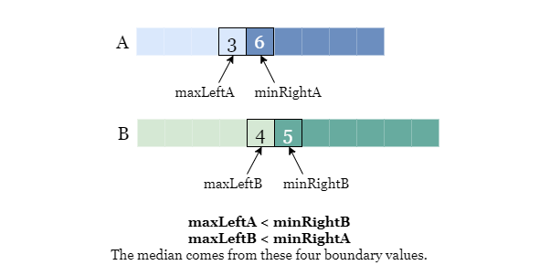

1 / 12
In this problem, we are given two sorted arrays, nums1 and nums2. We need
to return the median of these two arrays.
Let's start with the straightforward approach. If we put the elements of two arrays in one array A and
arrange them in order. Assume the merged arrays has a length of n, then the median is:
- A[n / 2], if n is odd.
- The average of A[n / 2] and A[n / 2 + 1], if n is even.
However, we do not really need to merge and sort these arrays. Note that both arrays are already sorted, so the
smallest element is either the first element of nums1 or the first element of nums2.
Therefore, we can set two pointers p1 and p2 at the start of each array, then we can get
the smallest element from the nums1 and nums2 by comparing the values
nums1[p1] and nums2[p2].
Please refer to the following slide as an example:
Get the total size of two arrays m + n
m + n is odd, we are looking for the (m + n) / 2-th element.m + n is even, we are looking for the average of the (m + n) / 2-th and the
(m + n) / 2 + 1-th elements.
Set two pointers p1 and p2 at the beginning of arrays nums1 and nums2.
If both p1 and p2 are in bounds of the arrays, compare the values at
p1 and p2:
nums1[p1] is smaller than nums2[p2], we move p1 one place to
the right.
p2 one place to the right.If p1 is outside nums1, just move p2 one place to the right.
If p2 is outside nums2, just move p1 one place to the right.
Get the target elements and calculate the median:
m + n is odd, repeat step 3 by (m + n + 1) / 2 times and return the element
from the last step.
m + n is even, repeat step 3 by (m + n) / 2 + 1 times and return the
average of the elements from the last two steps.
Java
class Solution {
public double findMedianSortedArrays(int[] A, int[] B) {
int na = A.length, nb = B.length;
int n = na + nb;
if ((na + nb) % 2 == 1) {
return solve(A, B, n / 2, 0, na - 1, 0, nb - 1);
} else {
return (double)(solve(A, B, n / 2, 0, na - 1, 0, nb - 1) + solve(A, B, n / 2 - 1, 0, na - 1, 0, nb - 1)) / 2;
}
}
public int solve(int[] A, int[] B, int k, int aStart, int aEnd, int bStart, int bEnd) {
// If the segment of on array is empty, it means we have passed all
// its element, just return the corresponding element in the other array.
if (aEnd < aStart) {
return B[k - aStart];
}
if (bEnd < bStart) {
return A[k - bStart];
}
// Get the middle indexes and middle values of A and B.
int aIndex = (aStart + aEnd) / 2, bIndex = (bStart + bEnd) / 2;
int aValue = A[aIndex], bValue = B[bIndex];
// If k is in the right half of A + B, remove the larger right half.
if (aIndex + bIndex < k) {
if (aValue > bValue) {
return solve(A, B, k, aStart, aEnd, bIndex + 1, bEnd);
} else {
return solve(A, B, k, aIndex + 1, aEnd, bStart, bEnd);
}
}
// Otherwise, remove the smaller left half.
else {
if (aValue > bValue) {
return solve(A, B, k, aStart, aIndex - 1, bStart, bEnd);
} else {
return solve(A, B, k, aStart, aEnd, bStart, bIndex - 1);
}
}
}
}
C++
class Solution {
public:
double findMedianSortedArrays(vector& A, vector& B) {
int na = int(A.size()), nb = int(B.size());
int n = na + nb;
if (n % 2) {
return solve(A, B, n / 2, 0, na - 1, 0, nb - 1);
} else {
return 1.0 * (solve(A, B, n/2 - 1, 0, na - 1, 0, nb - 1) + solve(A, B, n/2, 0, na - 1, 0, nb - 1)) / 2;
}
}
int solve(vector& A, vector& B, int k, int aStart, int aEnd, int bStart, int bEnd) {
// If the segment of on array is empty, it means we have passed all
// its element, just return the corresponding element in the other array.
if (aEnd < aStart) {
return B[k - aStart];
}
if (bEnd < bStart) {
return A[k - bStart];
}
// Get the middle indexes and middle values of A and B.
int aIndex = (aStart + aEnd) / 2, bIndex = (bStart + bEnd) / 2;
int aValue = A[aIndex], bValue = B[bIndex];
// If k is in the right half of A + B, remove the smaller left half.
if (aIndex + bIndex < k) {
if (aValue > bValue) {
return solve(A, B, k, aStart, aEnd, bIndex + 1, bEnd);
} else {
return solve(A, B, k, aIndex + 1, aEnd, bStart, bEnd);
}
}
// Otherwise, remove the larger right half.
else {
if (aValue > bValue) {
return solve(A, B, k, aStart, aIndex - 1, bStart, bEnd);
} else {
return solve(A, B, k, aStart, aEnd, bStart, bIndex - 1);
}
}
return -1;
}
};
Python3
class Solution:
def findMedianSortedArrays(self, A: List[int], B: List[int]) -> float:
na, nb = len(A), len(B)
n = na + nb
def solve(k, a_start, a_end, b_start, b_end):
# If the segment of on array is empty, it means we have passed all
# its element, just return the corresponding element in the other array.
if a_start > a_end:
return B[k - a_start]
if b_start > b_end:
return A[k - b_start]
# Get the middle indexes and middle values of A and B.
a_index, b_index = (a_start + a_end) // 2, (b_start + b_end) // 2
a_value, b_value = A[a_index], B[b_index]
# If k is in the right half of A + B, remove the larger right half.
if a_index + b_index < k:
if a_value > b_value:
return solve(k, a_start, a_end, b_index + 1, b_end)
else:
return solve(k, a_index + 1, a_end, b_start, b_end)
# Otherwise, remove the smaller left half.
else:
if a_value > b_value:
return solve(k, a_start, a_index - 1, b_start, b_end)
else:
return solve(k, a_start, a_end, b_start, b_index - 1)
if n % 2:
return solve(n // 2, 0, na - 1, 0, nb - 1)
else:
return (solve(n // 2 - 1, 0, na - 1, 0, nb - 1) + solve(n // 2, 0, na - 1, 0, nb - 1)) / 2
Let mm
be the size of array nums1 and nn be the size of array nums2.
Time complexity: O(m+n)O(m + n)
p1 and p2, it takes
O(1)O(1) to compare two elements and move the
corresponding pointer to the right.
Space complexity: O(1)O(1)
p1 and p2.Because the inputs are sorted arrays and the problem asks for a logarithmic time limit, we strongly feel that binary search (or a similar approach) is a promising method. While we're not sure how to cast the same pattern as a normal binary search on this problem, let's go over some steps of a regular binary search and see if we can get any inspiration. (If you are not familiar with binary search, you can refer to our Binary Search Explore Card)
Here we use binary search to find target in a sorted array A:
Locate the middle index (element) of A.
Compare the value of the middle element with target.
Reduce the search space by cutting the current array in half and discarding the half which is guaranteed not
to contain target.
Repeat the above process until we either empty the array (move to half a the length of 0) or find target.
At each step, the search space is cut in half, so we can quickly get the result. Now back to this problem where we
have two sorted arrays. For the sake of convenience, let's call them A and B.

Similarly, we can get and compare their middle values A_mid and B_mid. Without loss of
generality in this example we assume A_mid <= B_mid initially, as shown in the yellow boxes.

What does this comparison imply?
It implies that we can compare sections of A and B.
For the rest of this article, we will use ≤\le to represent the relative magnitude of values in arrays. For example, Aleft≤ArightA_{\text{left}} \le A_{\text{right}} means that every element in AleftA_{\text{left}} is no larger than any element in ArightA_{\text{right}}. We also 'compare' elements in an array with a single element similarly, for example, Aleft≤AmidA_{\text{left}} \le A_{\text{mid}} means that every element in AleftA_{\text{left}} is no larger than the element AmidA_{\text{mid}}.
This may not be the most standard way of expressing it, but is easy enough to understand.
Recall that both arrays are sorted, so we know that:
Combine these observations with the comparison we just made:
Amid≤BmidA_{\text{mid}} \le B_{\text{mid}}
We have the following result:
Aleft≤Amid≤Bmid≤BrightA_{\text{left}} \le A_{\text{mid}} \le B_{\text{mid}} \le B_{\text{right}}
Thus,
Aleft≤BrightA_{\text{left}} \le B_{\text{right}}
As shown in the picture below:

Since A is sorted, we know that Aleft≤ArightA_{\text{left}} \le A_{\text{right}}.

Now we know that A_left is smaller than two halves: A_right and B_right.
Although we still don't know where exactly these elements are, what we do know is A_left
doesn't intersect with A_right + B_right! There is an invisible boundary between the
A_left segment and the mixed segment A_right + B_right. As shown in the picture below, the
dashed line divides all sorted elements into two halves.
We can apply all the same logic to the mixed segment AleftA_{\text{left}} + BleftB_{\text{left}} and BrightB_{\text{right}}, which also do not intersect. You can try to prove it yourself as an exercise.
It looks somewhat clearer, we have clearly separated some subarrays. How do we continue to leverage this knowledge and use the cut-in-half method repeatedly?
The following step is the most important one.
Remember that we are looking for the median of sorted A + B which is one or two target values. We regard
the index of the target value in the sorted(A + B) as k. For example:
If the lengths of A and B are 6 and 5, the target index
is k = (6 + 5 + 1) / 2 = 6, we shall look for the 6th smallest element.
If the lengths of A and B are 6 and 6, the target indexes
are k = (6 + 6) / 2 = 6 and k + 1 = 7, we shall look for the 6th and the 7th
smallest elements.
Depending on whether the total number of elements is odd or even, we need the kthk^{th}
(and maybe the (k+1)th(k + 1)^{th})
elements. What matters is that we set an index k at the beginning and we want to find the kthk^{th}
smallest element using the Binary Search-like algorithm discussed previously (for convenience, we will discuss only
the kthk^{th}
element for now).
However, during the Binary Search-like algorithm, we keep removing one half of an array, so the index k
might not stay unchanged. Suppose we removed 3 elements that are smaller than the original kthk^{th}
smallest element, we shall look for the (k−3)th(k-3)^{th}
smallest element from the remaining arrays.

More specifically:
If k is larger than half the total number of elements in sorted(A + B), it means that the
kthk^{th}
element is in the second (larger) half of sorted(A + B), thus AleftA_{\text{left}}
(or BleftB_{\text{left}},
the smaller of the two smaller sections according to the comparison) is guaranteed not to contain this element, and
we can safely cut this half, and reduce k by the length of the removed half.
If k is not larger than half the total number of elements in sorted(A + B), it means that
the kthk^{th}
element is in the first (smaller) half of sorted(A + B), thus BrightB_{\text{right}}
(or ArightA_{\text{right}},
the larger of the two larger sections according to the comparison) is guaranteed not to contain this element, and we
can safely discard it. Note that we don't need to modify k this time, since we removed one larger half
that doesn't affect the order of the kthk^{th}
smallest element.
We can continue our search like above in the remaining arrays. The long arrow that starts from the
bottom and points to the top-left indicates that we are repeating the process. Once we cut off part of either A
or B, we regard the remaining arrays as modified A and B and restart this
algorithm. Note that the following picture represents one case only: we consider the case that a_value <
b_value, thus we remove either the smaller half of A or the larger half of B.
If the comparison result is a_value >= b_value, we shall remove either the smaller half of
B or the larger half of A.
That's it. We cut one of the two arrays in half at each step, so this approach has a logarithmic time complexity which we will discuss in detail later.
One more thing!
In the previous picture, we repeat all processes using the modified arrays, but this is just for the sake of
understanding. We won't create copies of two arrays repeatedly, because that would introduce a linear time
complexity at least. Instead, we just treat a part of the original array as the modified array for the next step, so
that we can repeat the process on the original array without making any duplication. To do this, we need to maintain
four pointers, two pointers for each array, e.g., a_start and a_end represent an inclusive
range [a_start, a_end] of A.
Let's define a function that helps us find the kthk^{th}
smallest element from two inclusive ranges [a_start, a_end] and [b_start, b_end] from
arrays A and B.
If the range (for example, a range of A) is empty, in other words a_start >
a_end, it means all elements in A are passed, we just return the (k -
a_start)-th element from the other array B. Vice versa if b_start >
b_end.
Otherwise, get the middle indexes of the two ranges: a_index = (a_start + a_end) / 2, b_index
= (b_start + b_end) / 2.
Get the middle values of the two ranges: a_value = A[a_index], b_value = B[b_index].
Cut one array in half, according to:
a_index + b_index < k, cut one smaller half.
a_value < b_value, cut the smaller half of A.B.b_value < a_value, cut the larger half of B.A.Repeat step 1 using the new starting and ending indexes of A and B.
Then we move on to find the median elements, and get the length of both arrays na = len(A) and nb
= len(B).
A and B is odd, we just use the above function to
find the middle element, that is k = (na + nb) / 2.
k = (na + nb) / 2 - 1 and k = (na
+ nb) / 2, and return their average.
Java
class Solution {
public double findMedianSortedArrays(int[] nums1, int[] nums2) {
if (nums1.length > nums2.length) {
return findMedianSortedArrays(nums2, nums1);
}
int m = nums1.length, n = nums2.length;
int left = 0, right = m;
while (left <= right) {
int partitionA = (left + right) / 2;
int partitionB = (m + n + 1) / 2 - partitionA;
int maxLeftA = (partitionA == 0) ? Integer.MIN_VALUE : nums1[partitionA - 1];
int minRightA = (partitionA == m) ? Integer.MAX_VALUE : nums1[partitionA];
int maxLeftB = (partitionB == 0) ? Integer.MIN_VALUE : nums2[partitionB - 1];
int minRightB = (partitionB == n) ? Integer.MAX_VALUE : nums2[partitionB];
if (maxLeftA <= minRightB && maxLeftB <= minRightA) {
if ((m + n) % 2 == 0) {
return (Math.max(maxLeftA, maxLeftB) + Math.min(minRightA, minRightB)) / 2.0;
} else {
return Math.max(maxLeftA, maxLeftB);
}
} else if (maxLeftA > minRightB) {
right = partitionA - 1;
} else {
left = partitionA + 1;
}
}
return 0.0;
}
}
C++
class Solution {
public:
double findMedianSortedArrays(vector& nums1, vector& nums2) {
if (nums1.size() > nums2.size()) {
return findMedianSortedArrays(nums2, nums1);
}
int m = nums1.size(), n = nums2.size();
int left = 0, right = m;
while (left <= right) {
int partitionA = (left + right) / 2;
int partitionB = (m + n + 1) / 2 - partitionA;
int maxLeftA = (partitionA == 0) ? INT_MIN : nums1[partitionA - 1];
int minRightA = (partitionA == m) ? INT_MAX : nums1[partitionA];
int maxLeftB = (partitionB == 0) ? INT_MIN : nums2[partitionB - 1];
int minRightB = (partitionB == n) ? INT_MAX : nums2[partitionB];
if (maxLeftA <= minRightB && maxLeftB <= minRightA) {
if ((m + n) % 2 == 0) {
return (max(maxLeftA, maxLeftB) + min(minRightA, minRightB)) / 2.0;
} else {
return max(maxLeftA, maxLeftB);
}
} else if (maxLeftA > minRightB) {
right = partitionA - 1;
} else {
left = partitionA + 1;
}
}
return 0.0;
}
};
Python3
class Solution:
def findMedianSortedArrays(self, nums1: List[int], nums2: List[int]) -> float:
if len(nums1) > len(nums2):
return self.findMedianSortedArrays(nums2, nums1)
m, n = len(nums1), len(nums2)
left, right = 0, m
while left <= right:
partitionA = (left + right) // 2
partitionB = (m + n + 1) // 2 - partitionA
maxLeftA = float('-inf') if partitionA == 0 else nums1[partitionA - 1]
minRightA = float('inf') if partitionA == m else nums1[partitionA]
maxLeftB = float('-inf') if partitionB == 0 else nums2[partitionB - 1]
minRightB = float('inf') if partitionB == n else nums2[partitionB]
if maxLeftA <= minRightB and maxLeftB <= minRightA:
if (m + n) % 2 == 0:
return (max(maxLeftA, maxLeftB) + min(minRightA, minRightB)) / 2
else:
return max(maxLeftA, maxLeftB)
elif maxLeftA > minRightB:
right = partitionA - 1
else:
left = partitionA + 1
Let mm
be the size of array nums1 and nn be the size of array nums2.
Time complexity: O(log(m⋅n))O(\log(m \cdot n))
nums1 or nums2. If one of the
arrays is emptied, we can directly get the target from the other array in a constant time. Therefore,
the total time spent depends on when one of the arrays is cut into an empty array.
Space complexity: O(logm+logn)O(\log m + \log n)
Similar to the analysis on time complexity, the recursion steps depend on the number of iterations before we cut an array into an empty array. In the worst-case scenario, we need O(logm+logn)O(\log m + \log n) recursion steps.
However, during the recursive self-call, we only need to maintain 4 pointers: a_start,
a_end, b_start and b_end. The last step of the function is to
call itself, so if tail call optimization is implemented, the call stack always has O(1)O(1)
records.
Please refer to Tail Call for more information on tail call optimization.
Recall the previous approach where we perform a binary search over the 'merged' array consisting of
nums1 and nums2, resulting in a time complexity of O(log(m⋅n))O(\log(m \cdot n)). We could further
improve the algorithm by performing the binary search only on the smaller array of nums1 and nums2,
thus the time complexity is reduced to O(log(min(m,n)))O(\log(\min(m, n))).
The main idea is similar to approach 2, where we need to find a point of partition in both arrays such that the maximum of the smaller half is less than or equal to the minimum of the larger half.
However, instead of partitioning over the merged arrays, we can only focus on partitioning the smaller array (let's
call this array A). Suppose the partition index is partitionA, we specify that the smaller
half contains (m + n + 1) / 2 elements, and we can use this feature to our advantage by directly making
partitionB equal to (m + n + 1) / 2 - partitionA, thus the smaller halves of both arrays
always contain a total of (m + n + 1) / 2 elements, as shown in the picture below.

The next step is to compare these edge elements.
If both maxLeftA <= minRightB and maxLeftB <= minRightA hold, it means that we have
partitioned arrays at the correct place.
A_left and B_leftA_right and B_rightWe just need to find the maximum value from the smaller half as max(A[maxLeftA], B[maxLeftB]) and the
minimum value from the larger half as min(A[minRightA], B[minRightB]). The median value depends on
these four boundary values and the total length of the input arrays and we can compute it by situation.

If maxLeftA > minRightB, it implies that maxLeftA is too large to be in the
smaller half and we should look for a smaller partition value of A.
Otherwise, it denotes that minRightA is too small to be in the larger half and we
should look for a larger partition value of A.

Assuming nums1 to be the smaller array (If nums2 is smaller, we can swap them). Let
m, n represent the size of nums1 and nums2, respectively.
Define the search space for the partitioning index partitionA by setting boundaries as left
= 0 and right = m.
While left <= right holds, do the following.
Compute the partition index of nums1 as partitionA = (left + right) / 2.
Consequently, the partition index of nums2 is (m + n + 1) / 2 - partitionA.
Obtain the edge elements:
A_left as maxLeftA = nums1[partitionA -
1]. If partitionA - 1 < 0, set it as maxLeftA = float(-inf).
A_right as minRightA =
nums1[partitionA]. If partitionA >= m, set it as minRightA =
float(inf).
B_left as maxLeftB = nums2[partitionB -
1]. If partitionB - 1 < 0, set it as maxLeftB = float(-inf).
B_right as minRightB =
nums2[partitionB]. If partitionB >= n, set it as minRightB =
float(inf).
Compare and recalculate: Compare maxLeftA with minRightB and maxLeftB
with minRightA.
maxLeftA > minRightB, it means the maxLeftA is too large to be in the
smaller half, so we update right = partitionA - 1 to move to the left half of the search
space.
maxLeftB > minRightA, it means that we are too far on the left side for partitionA
and we need to go to the right half of the search space by updating left = partitionA + 1.
Repeat step 4.
When both maxLeftA <= minRightB and maxLeftB <= minRightA are true:
(m + n) % 2 = 0, the median value is the average of the maximum value of the smaller
half and the minimum value of the larger half, given by answer = (max(maxLeftA, maxLeftB) +
min(minRightA, minRightB)) / 2.
answer =
max(maxLeftA, maxLeftB).
Java
class Solution {
private int p1 = 0, p2 = 0;
// Get the smaller value between nums1[p1] and nums2[p2] and move the pointer forwards.
private int getMin(int[] nums1, int[] nums2) {
if (p1 < nums1.length && p2 < nums2.length) {
return nums1[p1] < nums2[p2] ? nums1[p1++] : nums2[p2++];
} else if (p1 < nums1.length) {
return nums1[p1++];
} else if (p2 < nums2.length) {
return nums2[p2++];
}
return -1;
}
public double findMedianSortedArrays(int[] nums1, int[] nums2) {
int m = nums1.length, n = nums2.length;
if ((m + n) % 2 == 0) {
for (int i = 0; i < (m + n) / 2 - 1; ++i) {
int tmp = getMin(nums1, nums2);
}
return (double)(getMin(nums1, nums2) + getMin(nums1, nums2)) / 2;
} else {
for (int i = 0; i < (m + n) / 2; ++i) {
int tmp = getMin(nums1, nums2);
}
return getMin(nums1, nums2);
}
}
}
C++
class Solution {
public:
int p1 = 0, p2 = 0;
// Get the smaller value between nums1[p1] and nums2[p2] and move the pointer forward.
int getMin(vector& nums1, vector& nums2) {
if (p1 < nums1.size() && p2 < nums2.size()) {
return nums1[p1] < nums2[p2] ? nums1[p1++] : nums2[p2++];
} else if (p1 < nums1.size()) {
return nums1[p1++];
} else if (p2 < nums2.size()) {
return nums2[p2++];
}
return -1;
}
double findMedianSortedArrays(vector& nums1, vector& nums2) {
int m = int(nums1.size()), n = int(nums2.size());
if ((m + n) % 2 == 0) {
for (int i = 0; i < (m + n) / 2 - 1; ++i) {
int _ = getMin(nums1, nums2);
}
return (double)(getMin(nums1, nums2) + getMin(nums1, nums2)) / 2;
} else {
for (int i = 0; i < (m + n) / 2; ++i) {
int _ = getMin(nums1, nums2);
}
return getMin(nums1, nums2);
}
return -1;
}
};
Python3
class Solution:
def findMedianSortedArrays(self, nums1: List[int], nums2: List[int]) -> float:
m, n = len(nums1), len(nums2)
p1, p2 = 0, 0
# Get the smaller value between nums1[p1] and nums2[p2].
def get_min():
nonlocal p1, p2
if p1 < m and p2 < n:
if nums1[p1] < nums2[p2]:
ans = nums1[p1]
p1 += 1
else:
ans = nums2[p2]
p2 += 1
elif p2 == n:
ans = nums1[p1]
p1 += 1
else:
ans = nums2[p2]
p2 += 1
return ans
if (m + n) % 2 == 0:
for _ in range((m + n) // 2 - 1):
_ = get_min()
return (get_min() + get_min()) / 2
else:
for _ in range((m + n) // 2):
_ = get_min()
return get_min()
Let mm
be the size of array nums1 and nn be the size of array nums2.
Time complexity: O(log(min(m,n)))O(\log(\min(m, n)))
Space complexity: O(1)O(1)